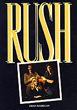
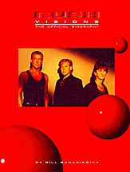

Books about Rush

Rush
by Brian Harrigan
Published in 1982 by Omnibus Press
80 pages, color & b/w photos
ISBN 0.86001.934.9
out of print
Rush, the Canadian heavy metal megastars. This is their complete story -- from
early days in the suburbs of Toronto to their present envied position as the
number one hard rock band on earth. Brian Harrigan writes for Melody Maker and
was previously press officer for Rush in the UK.
Success Under Pressure
by Steve Gett
Published in 1984 by Cherry Lane Books
48 pages, b/w photos
ISBN 0.89524.230.3
out of print

Visions
by Bill Banasiewicz
Published in 1988 by Omnibus Press
96 pages, color & b/w photos
ISBN 0.7119.1162.2
Over the course of 16 albums and thousands of concerts throughout the globe
Rush have established themselves as the most popular heavy metal and
progressive rock trio in the world. Their unique blend of power rock and
intelligent lyrics has won them a following as devoted as any in rock.
This first and only official biography follows the career of Geddy Lee, Alex
Lifeson and Neil Peart from their earliest days as a Toronto bar band
performing cover versions of sixties rock to their most recent LP 'Hold Your
Fire'. Along the way Rush have faced critical indifference with an
uncompromising stance that has justly increased their popularity.
Author Bill "B-Man" Banasiewicz, perhaps their number one fan, has followed the
fortunes of Rush over a decade and is a personal friend of the band and their
associates.